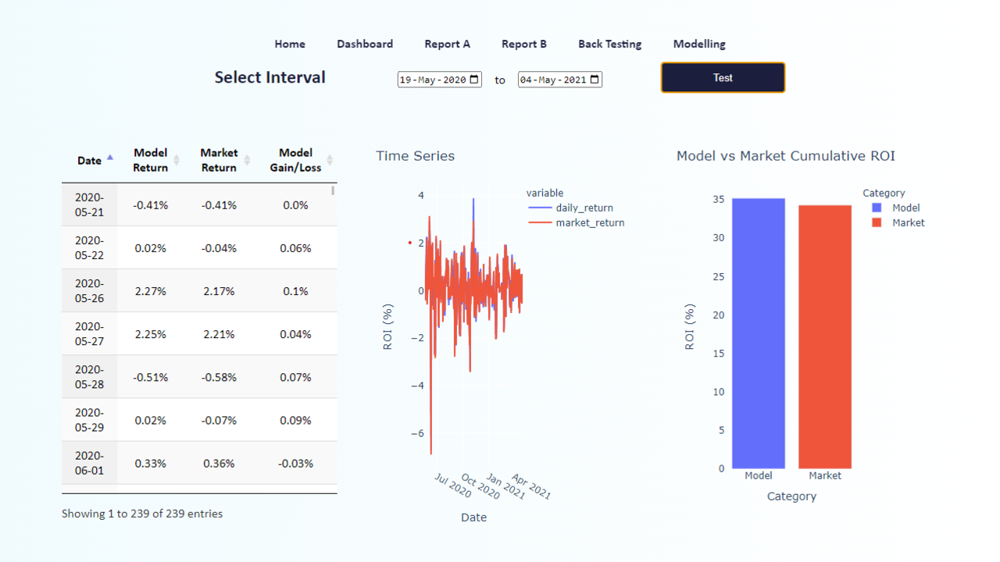

Portfolio Optimization Using Reinforcement Learning
Business Case
An investor wishes to know how best to allocate their portfolio of assets given the changes in the stock market the previous day.
Results
Trained a trading model using reinforcement learning algorithms to buy/sell/hold stock holdings within a portfolio in such a way as to maximise ROI. Yielded a 2% increase in comparison to the market when backtested.